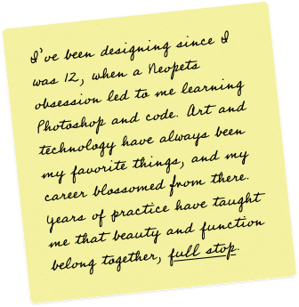
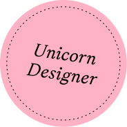

Whether that's building an identity from the ground up, bringing order to a system already in motion, or carrying a brand consistently across every touchpoint, the work adapts to where the brand is.
She works with startups and in-house teams on one-off projects and ongoing partnerships. She’s drawn to people who are passionate about what they’re creating, eager to break the mold, and genuinely good people.
She works across many facets of design, including brand identity, web design, digital product design, and visual systems.
Brand Identity
Web & Digital
Ongoing
Typewolf (2025)
Typewolf (2024)
Landbook (2024)
Landbook (2023)
Typewolf (2023)
Typewolf (2022)